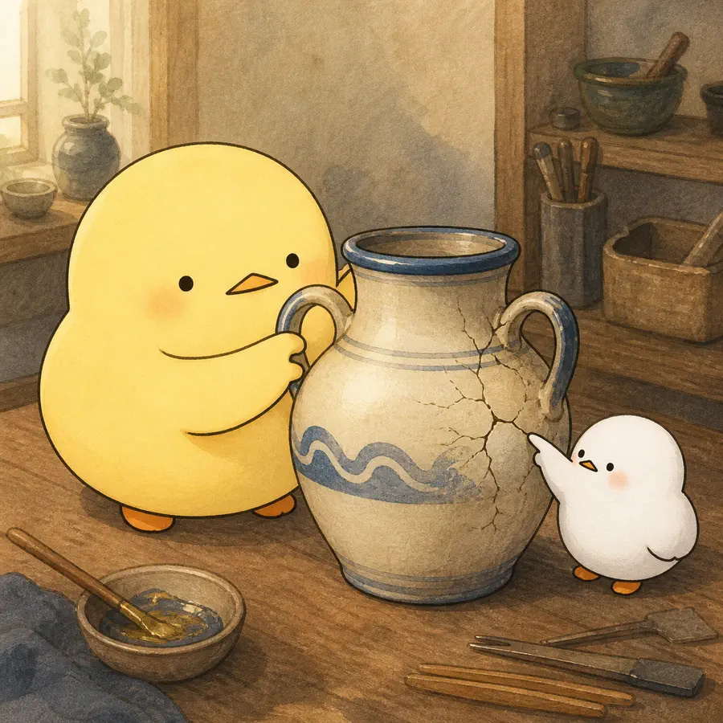
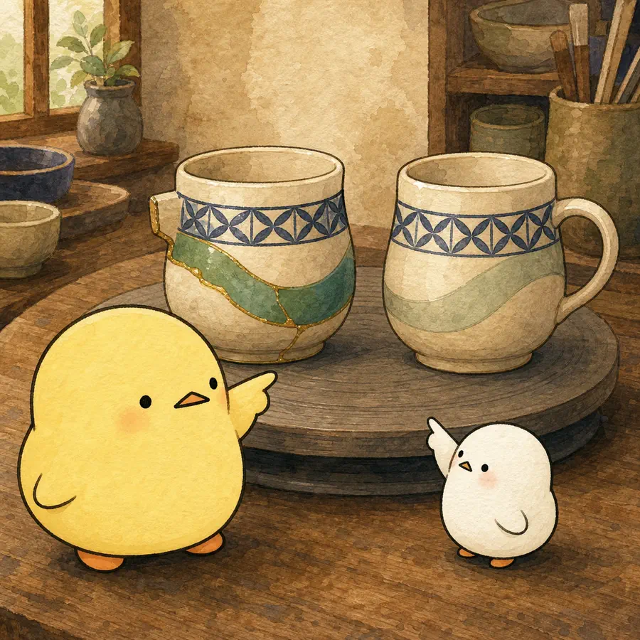
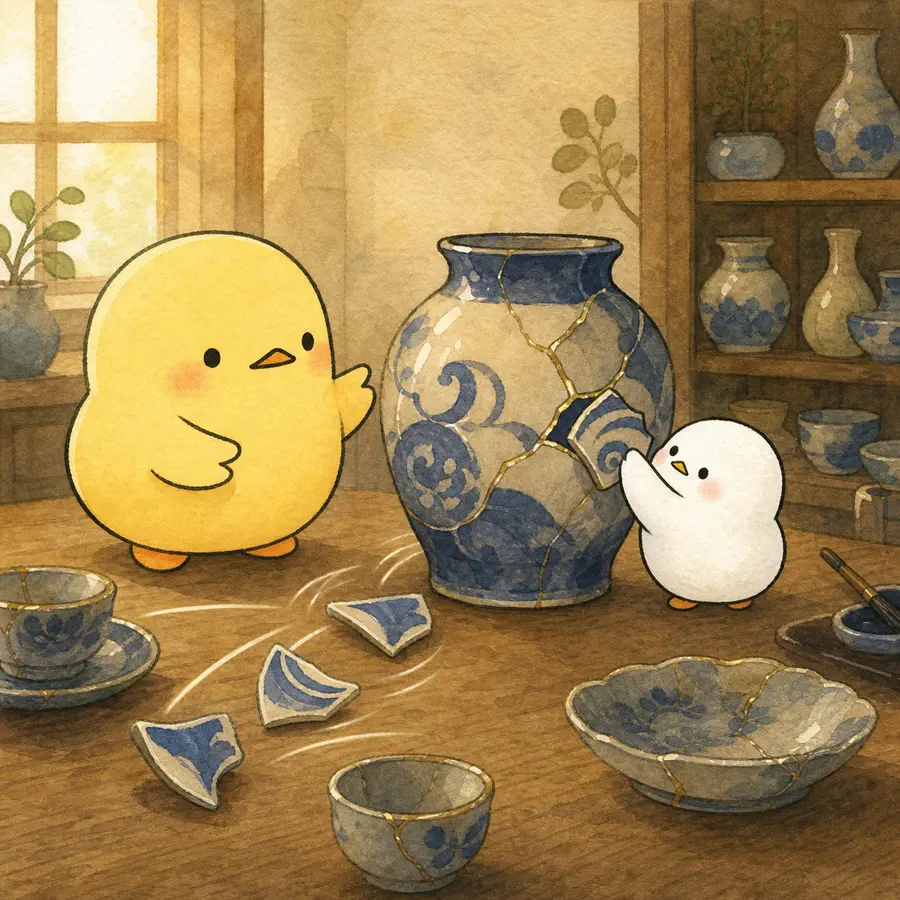
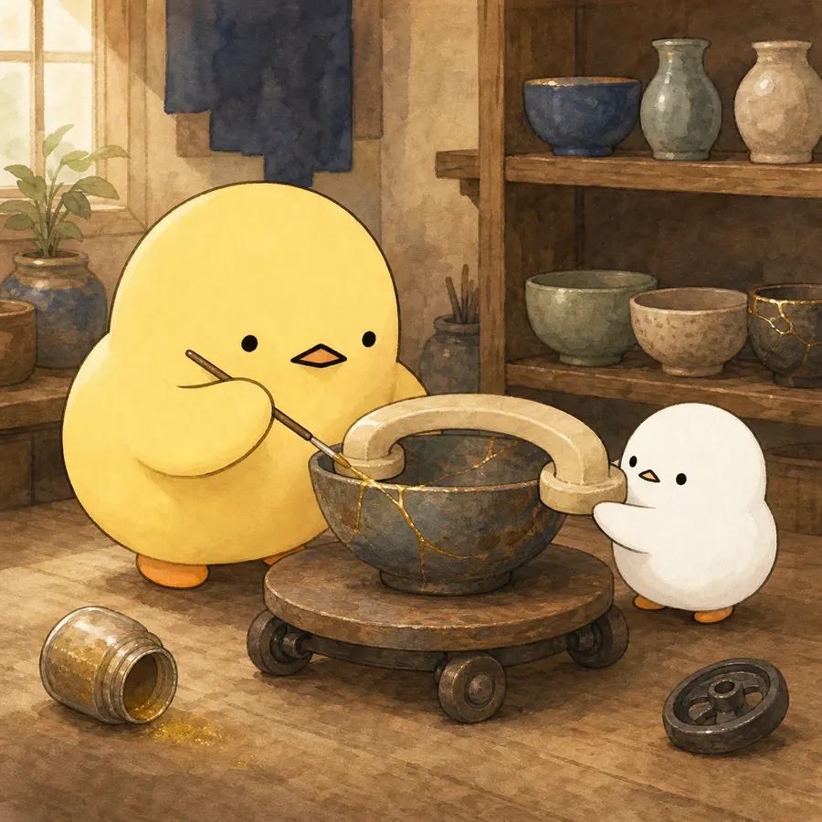

ILLUSTRATED OVERVIEW
The Effect of Widowhood on Older Adults’ Social Participation
사별 뒤의 사회참여는 새 그릇을 급히 쌓는 일이 아니라, 상실 전부터 금이 간 생활과 익숙한 관계를 다시 잇는 과정일 수 있다.
옆으로 넘겨 4컷 보기
-

사별은 사망일의 단일 충격이 아니라 배우자 질병기의 참여 감소와 사망 뒤 재조정이 이어지는 과정이다.
-

기초참여와 공변량을 통제하면 사별자의 비공식 참여는 대조군보다 0.44표준편차 높았지만 공식 참여 차이는 유의하지 않았다.
-

비공식 접촉의 증가는 능동적 역할 대체보다 친구·친척이 먼저 연락하고 지지한 결과일 가능성이 컸다.
-

지원은 새 활동을 최대화하기보다 의미 있던 관계·생활의 단절을 줄이고, 교통·통신·사회경제적 장벽을 낮추는 데 초점을 둬야 한다.